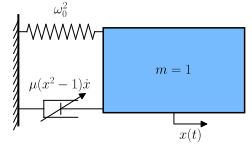

Example 6: Van der Pol oscillator
MMS example on a Van der Pol oscillator. This configuration is very close from that studied by Nayfeh and Mook in Nonlinear Oscillations (1995), section 3.3.4.
System description
{kind=link}

Illustration of a Van der Pol oscillator.
The system’s equation is
where
\(x\) is the oscillator’s coordinate,
\(t\) is the time,
\(\dot{(\bullet)} = \mathrm{d}(\bullet)/\mathrm{d}t\) is a time derivative,
\(\omega_0\) is the oscillator’s natural frequency,
\(\mu\) is the linear and nonlinear damping coefficient.
A parametric response around the oscillator’s frequency is sought so the frequency is set to
where
\(\epsilon\) is a small parameter involved in the MMS,
\(\sigma\) is the detuning wrt the reference frequency \(\omega_0\).
The parameter \(\mu = \epsilon \tilde{\mu}\) is then scaled such that
to indicate that linear and nonlinear dampings are weak.
Code description
The script below allows to
Construct the dynamical system.
Apply the MMS to the system,
Solve the modulation equations (yields the transient response),
Evaluate the MMS results at steady state,
Solve the steady state modulation equations (yields the limit cycle),
Evaluate the symbolic expressions for given numerical parameters and plot the limit cycle and two trajectories in the phase portrait.
1# -*- coding: utf-8 -*-
2
3#%% Imports and initialisation
4from sympy import symbols, Function, sympify, solve, dsolve, cos, sin
5from sympy.physics.vector.printing import init_vprinting, vlatex
6init_vprinting(use_latex=True, forecolor='White')
7from oscilate import MMS
8
9# Parameters and variables
10omega0, c = symbols(r'\omega_0, c', real=True, positive=True)
11mu = symbols(r'\mu', real=True, positive=True)
12t = symbols('t')
13x = Function(r'x', real=True)(t)
14
15# Dynamical system
16Eq = x.diff(t,2) + omega0**2*x + mu*(x**2 - 1 )*x.diff(t)
17dyn = MMS.dyn_sys.Dynamical_system(t, x, Eq, omega0, F=0)
18
19# Initialisation of the MMS sytem
20eps = symbols(r"\epsilon", real=True, positive=True) # Small parameter epsilon
21Ne = 2 # Order of the expansions
22omega_ref = sympify(1) # Reference frequency
23ratio_omegaMMS = 1 # Look for a solution around omega_ref
24
25sigma0 = symbols(r"\sigma_0", real=True) # Detuning of omega0 wrt 1
26detunings = [sigma0] # Detuning of the oscillator's frequency
27sub_sigma0 = [(sigma0, omega0-1)] # Only for display purposes
28
29param_to_scale = (mu, sigma0)
30scaling = (1 , 1 )
31param_scaled, sub_scaling = MMS.scale_parameters(param_to_scale, scaling, eps)
32
33kwargs_mms = dict(ratio_omegaMMS=ratio_omegaMMS, ratio_omega_osc=[1], detunings=detunings)
34mms = MMS.Multiple_scales_system(dyn, eps, Ne, omega_ref, sub_scaling, **kwargs_mms)
35
36# Application of the MMS
37mms.apply_MMS(rewrite_polar="all")
38
39# Transient analysis - slow time solutions
40Eqa = mms.coord.at[0].diff(t) - mms.sol.fa[0] # Equation on a
41Eqbeta = mms.coord.at[0]*mms.coord.betat[0].diff(t) - mms.sol.fbeta[0] # Equation on beta
42ai = symbols(r"a_i", real=True, positive=True) # Initial amplitude
43betai = symbols(r"\beta_i", real=True, positive=True) # Initial phase
44ICa = {mms.coord.at[0].subs(t,0) : ai} # Initial condition on a
45ICbeta = {mms.coord.betat[0].subs(t,0) : betai} # Initial condition on beta
46a_sol = dsolve(Eqa, mms.coord.at[0], ics=ICa).rhs.subs(mms.sub.sub_scaling_back).subs(sigma0+1, omega0)
47beta_sol = dsolve(Eqbeta, mms.coord.betat[0], ics=ICbeta).rhs.subs(mms.coord.at[0], a_sol).doit().expand().simplify().subs(mms.sub.sub_scaling_back).subs(sigma0+1, omega0)
48
49# Transient analysis - instantaneous oscillation frequency and time response
50psi = Function(r"\psi", real=True, positive=True)(t) # Full phase
51sub_psi = [(mms.omega*t, psi+mms.coord.betat[0])] # Substitution from the relative phase beta to the full one psi
52psi_sol = (mms.omega*t - beta_sol).subs([mms.sub.sub_omega]).expand().simplify() # From the beta solution to the psi one
53omegaNL = psi_sol.diff(t).simplify().factor() # Instantaneous oscillation frequency
54list_cos_sin = list(mms.sol.x[0].atoms(cos, sin)) # List of harmonics in the response
55x_sol = mms.sol.x[0].expand().collect(list_cos_sin).subs(mms.sub.sub_t[:-1]).subs(mms.sub.sub_scaling_back).subs(sub_psi).simplify() # Time signal
56
57# Evaluation at steady state
58ss = MMS.Steady_state(mms)
59
60# Steady state analysis - amplitude and frequency
61aSS_sol = solve(ss.sol.fa[0], ss.coord.a[0])[0] # Amplitude solution
62sigSS_sol = solve(ss.sol.fbeta[0], mms.sigma)[0].subs(ss.coord.a[0], aSS_sol) # Detuning solution
63omegaSS_sol = (1 + eps*sigSS_sol).subs(mms.sub.sub_scaling_back).simplify() # Frequency solution
64sub_SS_sol = [(ss.coord.a[0], aSS_sol), (mms.sigma, sigSS_sol)] # Substitutions to steady state solutions
65xSS_sol = mms.sol.x[0].expand().collect(list_cos_sin).subs(mms.sub.sub_t[:-1]).subs(ss.sub.sub_SS).subs(mms.sub.sub_scaling_back) # Time signal
66
67# Steady state analysis - Stability analysis
68J = ss.Jacobian_polar() # Jacobian of the slow time system (in polar coordinates)
69JSS = J.applyfunc(lambda expr: expr.subs(sub_SS_sol).subs(mms.sub.sub_scaling_back)) # Jacobian evaluated on the steady state solution
70eigvals = list(JSS.eigenvals().keys()) # Eigenvalues
71eigvecs = list([item[2][0] for item in JSS.eigenvects()]) # Eigenvectors
72
73# Phase portrait - Numerical evaluation of the symbolic solutions
74print("Numerical evaluation")
75from oscilate.sympy_functions import sympy_to_numpy
76import numpy as np
77
78def get_x_v(omega0_num, mu_num, SS=False, **kwargs):
79 """
80 Retrieve the numerical expressions of the displacement x and velocity v from the symbolic results, for a given set of numerical parameters
81 """
82
83 sigma0_num = 1 - omega0_num # Detuning
84
85 dic_time = {
86 "epsilon" : (mu, mu_num),
87 "sigma0": (sigma0, sigma0_num),
88 "omega0": (omega0, omega0_num)
89 }
90
91 if SS: # Limit cycle
92 a_num = sympy_to_numpy(aSS_sol, dic_time) # Amplitude response at steady state
93 omega_num = sympy_to_numpy(omegaSS_sol, dic_time) # Frequency of the response at steady state
94 t_num = np.linspace(0, 2*np.pi/omega_num, 10000)
95
96 dic_a_beta = {
97 "t": (t, t_num),
98 "a": (ss.coord.a[0], a_num),
99 "beta": (ss.coord.beta[0], 0),
100 "omega": (mms.omega, omega_num)
101 }
102
103 vSS_sol = xSS_sol.diff(t) # Symbolic expression of the velocity at steady state
104 x = sympy_to_numpy(xSS_sol, dic_time | dic_a_beta) # Displacement at steady state
105 v = sympy_to_numpy(vSS_sol, dic_time | dic_a_beta) # Velocity at steady state
106
107 else: # Transient trajectories
108 ai_num, t_num = list(map(kwargs.get,["ai","t"]))
109 dic_time["t"] = (t, t_num)
110 dic_time["ai"] = (ai, ai_num)
111 dic_time["betai"] = (betai, 0)
112
113 dic_a_psi = {
114 "a": (mms.coord.at[0], sympy_to_numpy(a_sol, dic_time)),
115 "psi": (psi, sympy_to_numpy(psi_sol, dic_time)),
116 "da": (mms.coord.at[0].diff(t), sympy_to_numpy(a_sol.diff(t).simplify(), dic_time)),
117 "dpsi": (psi.diff(t), sympy_to_numpy(psi_sol.diff(t).simplify(), dic_time))
118 }
119
120 v_sol = x_sol.diff(t)
121 x = sympy_to_numpy(x_sol, dic_time | dic_a_psi)
122 v = sympy_to_numpy(v_sol, dic_time | dic_a_psi)
123
124 return x, v
125omega0_num = 0.8
126mu_num = 0.3
127xLC, vLC = get_x_v(omega0_num, mu_num, SS=True)
128xLT, vLT = get_x_v(omega0_num, mu_num, SS=False, **dict(ai=0.5, t=np.linspace(0, 60, 10000)))
129xUT, vUT = get_x_v(omega0_num, mu_num, SS=False, **dict(ai=3.5, t=np.linspace(0, 60, 10000)))
130
131# Plot the phase portrait
132import matplotlib.pyplot as plt
133
134fig, ax = plt.subplots()
135ax.plot(xLC, vLC, c="k", lw=2, zorder=3)
136ax.plot(xLT, vLT, c="tab:blue")
137ax.plot(xLT[0], vLT[0], marker="o", mfc="tab:blue", mec="none", ms=4)
138ax.plot(xUT, vUT, c="tab:red")
139ax.plot(xUT[0], vUT[0], marker="o", mfc="tab:red", mec="none", ms=4)
140ax.set_xlabel(r"${}$".format(vlatex(x)))
141ax.set_ylabel(r"${}$".format(vlatex(x.diff(t))))
142
143# %%